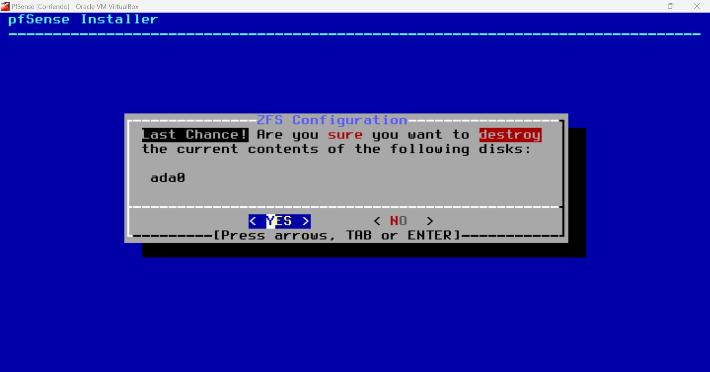

<div class="container">
    <div class="px-4 py-5 my-5 text-center">
        <h1>Como usar Pfsense</h1>
        <h2>¿Que es?</h2>
        <p>PfSense es una distribución de FreeBSD personalizada, diseñada específicamente para
            funcionar como firewall y enrutador. Su código abierto y flexibilidad para instalarlo en una
            amplia gama de ordenadores lo hacen muy atractivo. Además, ofrece una interfaz web intuitiva
            para facilitar su configuración</p>
        <p>En el ámbito de las redes informáticas, PfSense se destaca como una solución integral para la
            gestión de seguridad y conectividad. Originario del proyecto FreeBSD, PfSense es un sistema
            operativo especializado que funciona como firewall y enrutador. Su diseño modular y su
            naturaleza de código abierto permiten una personalización extensa, adaptándose a las necesidades
            específicas de cada entorno. Entre sus funciones más valoradas se encuentra el filtrado avanzado
            de paquetes, que garantiza la protección contra intrusiones y ataques externos, y su capacidad
            para implementar Virtual Private Networks (VPNs) con OpenVPN, una herramienta esencial para
            la creación de conexiones seguras y cifradas.</p>
        <h2 class="my-5">Instalación</h2>
        <h3>Creación Máquina Virtual para PfSense</h3>
        <p>Para empezar, vamos a crear una nueva maquina virtual en VirtualBox con el nombre
            “PfSense”, para hacer esto vamos a elegir la carpeta en donde queremos que se almacene la
            maquina virtual, no vamos a agregar una imagen ISO (por el momento), en el tipo de maquina
            vamos a seleccionar “BSD” y en la versión vamos a elegir “FreeBDS (64-bit)”, quedando de la
            siguiente manera:</p>
        
        <h3 class="my-3">Asignación Memoria RAM y Disco Duro PfSense</h3>
        <p>En el siguiente paso vamos a asignar una cantidad de memoria RAM y un número de núcleos
            de procesador para nuestra máquina virtual, en este caso vamos a asignar 4 GB, lo que es igual a
            4069 MB y 4 núcleos:
            </p>
        
        <h3 class="my-3">Configuración Primer Adaptador de Red PfSense</h3>
        <p>Ya con nuestra maquina virtual creada, procedemos a configurarla. Para esto vamos a abrir las
            configuraciones y seleccionamos la opción “Red”. Dentro de las opciones del Adaptador 1,
            vamos a seleccionar en conectado a la opción “Adaptador puente” y luego en nombre vamos a
            elegir “Realtek PCIe GBE Family Controller”, seguido de esto abrimos las configuraciones
            avanzadas del adaptador y en modo promiscuo vamos a elegir la opción “Permitir todo”. Para
            finalizar vamos a dar click en el icono de recarga que aparece al lado de cuadro de texto
            Dirección MAC, quedando todo de esta forma:</p>
        
        <h3 class="my-3">Configuración Segundo Adaptador de Red PfSense</h3>
        <p>Ahora vamos a seleccionar el del Adaptador 2, vamos a habilitar el adaptador de res y en las
            configuraciones seleccionaremos lo siguiente. En conectado a seleccionamos la opción “Red
            interna”, seguido de esto abrimos las configuraciones avanzadas del adaptador y en modo
            promiscuo vamos a elegir la opción “Permitir todo”. Para finalizar vamos a dar click en el icono
            de recarga que aparece al lado de cuadro de texto Dirección MAC, quedando todo de esta forma:</p>
        
        <h3 class="my-3">Asignar Imagen ISO a la Máquina Virtual PfSense</h3>
        <p>En los detalles de nuestra maquina virtual vamos a elegir Almacenamiento IDE secundario 0 y
            vamos a elegir la opción “Seleccionar un archivo de disco...”:</p>
        
        <p>Ahora vamos a ir a la ubicación donde tenemos guardada la imagen ISO de PfSense y la
            vamos a seleccionar:</p>
        
        <p>Por último, vamos a iniciar nuestra máquina virtual.</p>
        <h3 class="my-3">Guía Instalación PfSense desde ISO</h3>
        <p>Una vez iniciada la maquina virtual, vamos a seguir los pasos que nos aparecen en la pantalla.
            En primer momento aceptamos los términos y condiciones:</p>
        
        <p>Ahora con la tecla Enter vamos a elegir la opción “Install pfSense”:</p>
        
        <p>Volvemos a dar en la tecla Enter eligiendo la opción “Guided Root-on-ZFS</p>
        
        <p>Volvemos a dar en la tecla Enter:</p>
        
        <p>Volvemos a dar en la tecla Enter seleccionando la primera opción “Stripe – No Redundancy”</p>
        
        <p>Pulsamos la tecla espacio para seleccionar el disk y volvemos a dar en la tecla Enter:</p>
        
        <p>Volvemos a dar en la tecla Enter seleccionando la primera opción “YES”</p>
        
        <p>Y esperamos a que el proceso de instalación termine:</p>
        
        <h3 class="my-3">Eliminar Imagen ISO a la Máquina Virtual PfSense</h3>
        <p>Una vez finalizado el proceso anterior, vamos a apagar la maquina desde virtual box y vamos
            a dar click derecho en la imagen ISO que agregamos hace dos pasos, y seleccionamos la opción
            “Eliminar disco de la unidad virtual”:</p>
        
        <h3 class="my-3">Verificar Correcta Instalación y Direcciones IP</h3>
        <p>Una vez hecho todos los pasos anteriores, vamos a volver a iniciar la maquina virtual de
            PfSense y corroborar que la dirección ip WAN y LAN aparezcan correctamente:
        </p>
        
    </div>
</div>
